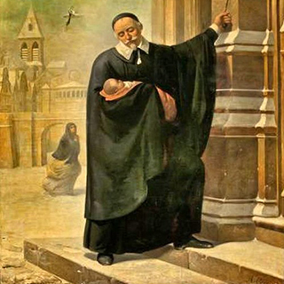

Nombre:
Vicente (Masculino)
Celebran:
Los Vicente suelen celebrar el
5-abr:San Vicente Ferrer
Nació:
24 de abril de 1581 en Pouy, en el
actual Francia
Falleció:
27 de septiembre de 1660 en París,
en el actual Francia
Proceso:
Beatificadoel 13 de agosto de 1729
por Benedicto XIII
Canonizado:
El 16 de junio de 1737 por Clemente
XII
Celebración:
27 de septiembre
Religioso:
De la Congregación de la Misión